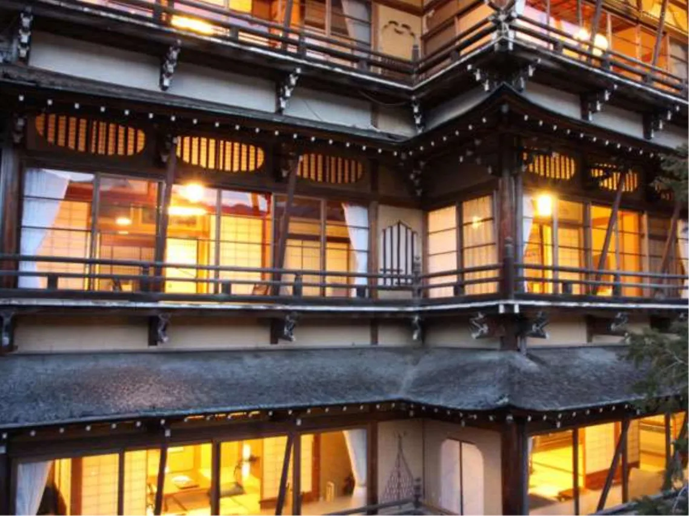
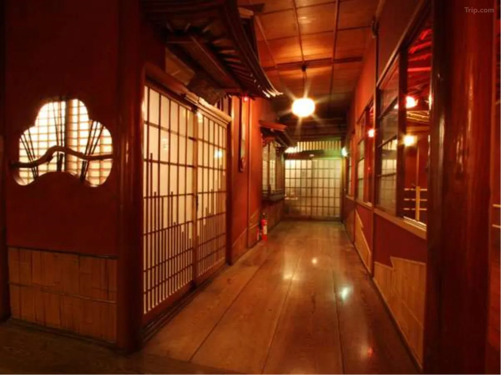
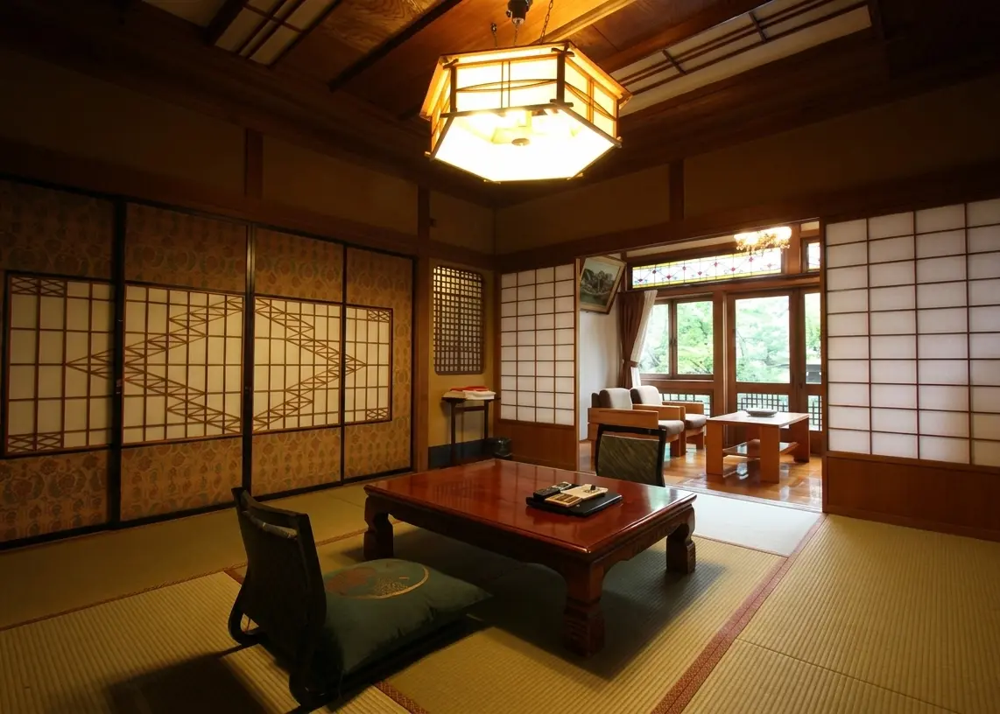
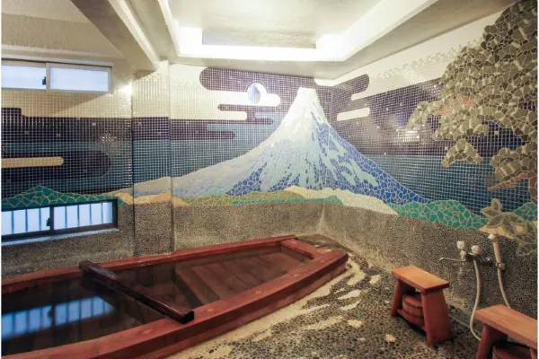
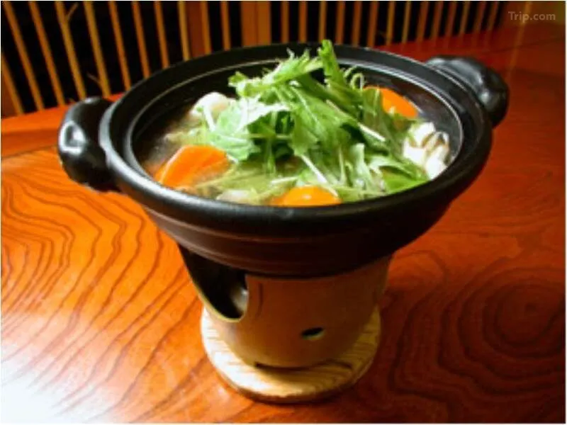
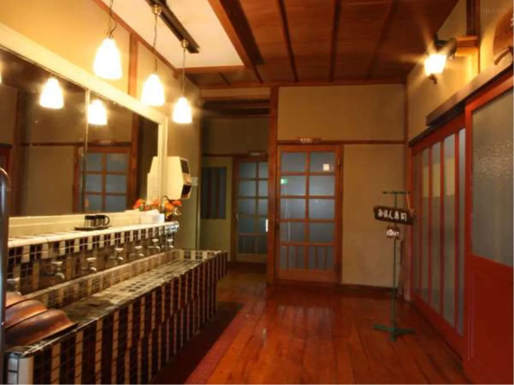
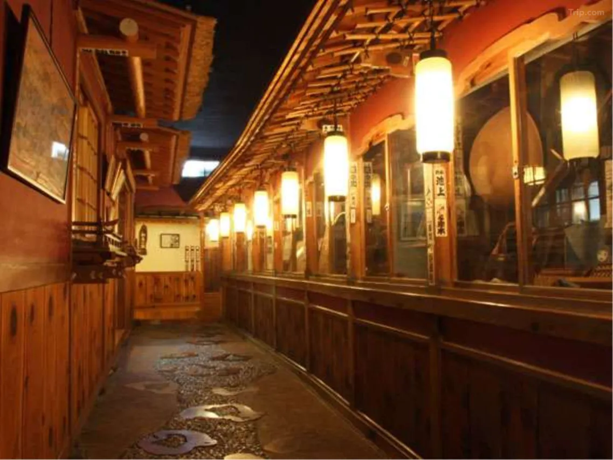
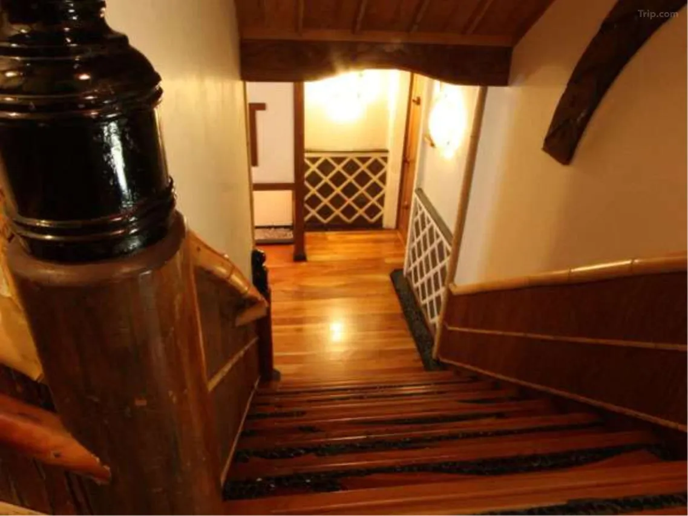

At nightfall, something changes in Shibu Onsen. The cobblestone street empties of day visitors. Steam rises from the grates in the pavement, catching the light from the lanterns strung between the buildings. And then, at the far end of the street, the Saigetsuro begins to glow. The four-story wooden facade of Rekishi-no-Yado Kanaguya — amber light filling each of its arched windows, the ryokan's crest visible in the ironwork above the entrance — is the thing that Ghibli pilgrims travel from every continent to stand in front of. In the film, it is the thing that Chihiro stands in front of before the spirit world absorbs her completely.
Kanaguya has been standing in this position since 1758. The Saigetsuro building, which provides its unmistakable four-story silhouette, was completed in 1936 and designated a Registered Tangible Cultural Property of Japan in 2003. Its 13 cedar pillars — each approximately 15 meters long, assembled using traditional wooden joinery with almost no nails — support a structure that has been identified by Spirited Away pilgrims, architectural historians, and multiple media organisations as one of the most direct inspirations for Aburaya's labyrinthine interior. Studio Ghibli has not confirmed this. They do not confirm anything. But you need only walk Kanaguya's narrow corridors — past the curved staircases, the carved transoms, the stained glass panels inset beside shoji screens — to understand why this place, and not merely the building's photograph, is what people travel here for.
The Building That Started as a Blacksmith Shop

Before Kanaguya was a ryokan, it was a blacksmith shop. The Kanaguya family — the name literally means metal fittings shop — operated a forge in Shibu Onsen in the early Edo period. During reconstruction after a landslide in the mountains directly behind the property, a hot spring erupted from the excavated ground. Hosokawa Rikizo's Meguro Gajoen built its palace for Tokyo society in 1931. Kanaguya built its inn for the mountain gods. The founding date recorded in the ryokan's history is 1758 — six years before Mozart was born, forty years before Dogo Onsen Honkan began operating in its current form, a full century before Japan opened to the outside world.
The Saigetsuro — the great hall built in 1936, two years before the Tokyo Olympics were first awarded and then cancelled — represents the moment the ryokan stopped growing incrementally and built something that would define it permanently. The construction budget was, by the standards of Showa-era ryokan construction, extraordinary. Thirteen cedar pillars, each sourced for specific quality and diameter, were transported to Shibu Onsen through terrain that made the journey itself a significant undertaking. The joinery was executed without nails — the same technique used in temple construction, where the wood is cut and fitted with such precision that the structure holds through its own geometry. What resulted was a wooden building of four stories with a structural integrity that has survived nine decades of mountain winters, and an interior that reads, to anyone who has seen Spirited Away, as a place they have been before.
Inside the Corridors

The interior of Kanaguya is not a museum. It is a working building that has been receiving overnight guests continuously since 1758, and the wear of that history is part of what it offers. The floorboards creak in specific places. The corridors turn unexpectedly. Staircases arrive at angles that make first-time guests stop and recalibrate their sense of the building's geometry. Multiple reviewers report getting lost while moving between the baths — consulting the posted maps, retracing steps, eventually finding their way through a passage they had not previously identified as a passage. This is not a design failure. It is the spatial condition that Miyazaki's team understood as the essential quality of Aburaya: a building so accumulated, so layered by generations of construction and modification, that orientation within it is a form of participation rather than navigation.
The 29 guest rooms each have a distinct layout and aesthetic. No two are identical — the builders considered uniformity a marker of cheap construction, so each room was conceived individually, with its own proportions, its own window treatment, its own placement of the tokonoma alcove. Some rooms feature stained glass panels beside traditional shoji screens — the blended Japanese-Western aesthetic of early Showa construction that appears throughout the building and reads, in the film, as the eclectic visual vocabulary of a spirit world that has absorbed human decorative styles without understanding their original purpose. Every room smells of wood and water. The futon is laid during dinner. Tea and local sweets arrive at check-in.
Each evening, the ryokan hosts a Cultural Property Tour — a guided walk through the building's architectural history, covering the joinery techniques, the specific materials sourced for the Saigetsuro's construction, and the building's designation process. A separate Onsen Source Tour visits the four private spring sources, including the original spring that caused the blacksmith family to become an inn. Both tours are included for overnight guests and are conducted in Japanese, with written materials available in English.
Eight Baths, Four Springs, Three Water Compositions
Kanaguya operates eight baths fed by four distinct private spring sources — three large communal baths and five private baths that operate on a first-come, first-available basis without reservation. The private baths range from a room with a Mt. Fuji mosaic to a small bath cut into a space that reads as a cave. Two outdoor rotenburo allow bathing under the mountain sky, with the cedar trees of Shibu Onsen's forest visible above the bath walls.
The spring water is 100% free-flowing — the building's taps and showers also run onsen water, not municipal supply. Three distinct mineral compositions are available across the different baths: chloride springs, sulfate springs, and sulfur springs, each with a different temperature, viscosity, and scent. The water is volcanic in origin, high in iron content (the oldest spring source, the one that originally erupted during the blacksmith family's reconstruction, runs yellowish-brown and slightly opaque — a visual that requires a moment of adjustment before you understand it as purity rather than contamination). All baths are free of charge for overnight guests, accessible throughout the night.
Additionally, Kanaguya provides overnight guests with a key to the nine public bathhouses of Shibu Onsen — an onsen-hopping circuit through the cobblestone town that operates on a stamp-collection system. Each of the nine baths has a different character; together they represent the accumulated bathing infrastructure of a town that has been serving pilgrims, poets, and samurai traveling to Zenkoji Temple since at least the Nara period. The circuit is best walked in yukata and wooden geta sandals, which the ryokan provides, in the hour before dinner.
The Snow Monkeys and the Mountain Context
Shibu Onsen exists within a landscape that makes the pilgrimage here something more than a building visit. Jigokudani Yaen-koen — the Jigokudani Monkey Park, where wild Japanese macaques descend from the mountains in winter to soak in the natural hot springs — is approximately a 40-to-60-minute walk through the cedar forest above Shibu Onsen. The walk itself, through a gorge where the steam from the earth rises through the trees and the path narrows to single file, is one of the stranger approaches to a wildlife area in Japan. The monkeys bathe year-round, though the canonical image — a macaque sitting chest-deep in steaming water with snow falling around it — requires a winter visit, ideally between December and March.
Above Jigokudani, the plateau of Shiga Kogen opens into one of Japan's largest highland resort areas — skiing and snowboarding in winter, alpine trekking and wildflower meadows in summer. The combination of mountain onsen, Spirited Away architecture, wild macaque bathing, and highland landscape makes the Shibu Onsen–Yudanaka area one of Japan's most compressed itineraries: everything is within 10 kilometers of Kanaguya's front door.
Getting There: The Right Way to Arrive
From Tokyo, the journey takes approximately two and a half hours on the optimal route: Hokuriku Shinkansen from Tokyo Station to Nagano (approximately 90 minutes), then the Nagano Electric Railway from Nagano Station to Yudanaka Station (approximately 45 minutes, the final stop on the line). From Yudanaka, Kanaguya operates a shuttle bus for guests checking in from 3 PM onward — advance reservation required. Alternatively, a local bus from Yudanaka Station to the Shibu Onsen or Wagobashi stop takes approximately 10 minutes, followed by a 2-minute walk to the ryokan.
The correct arrival time is late afternoon — specifically, at a point when you will reach the cobblestone street of Shibu Onsen as the light begins to fail. The Saigetsuro's illumination starts at dusk, and the first sight of it glowing amber against the mountain dark is the experience that every review of this ryokan returns to, in different words, with the same quality of involuntary recognition. Arrive before dark. Walk the street once from the far end before checking in. The building needs the night to complete what it is.
Practical Information
- Check-in: 3:00 PM Check-out: 10:00 AM
- Meals: Kaiseki multi-course dinner + traditional Japanese breakfast included in all plans
- Baths: 8 total — 3 large communal baths, 5 private baths (no reservation needed; open if door is open), 2 outdoor rotenburo. All fed by 4 private spring sources; 100% free-flowing onsen water including taps and showers
- Town baths: Key to Shibu Onsen's 9 public bathhouses provided at check-in — free for overnight guests
- Evening tours: Cultural Property Tour (architecture) + Onsen Source Tour — both included; held nightly in Japanese with English materials
- From Tokyo: Hokuriku Shinkansen → Nagano (~90 min) → Nagano Electric Railway → Yudanaka Station (~45 min) → shuttle bus to Kanaguya (~10 min; advance reservation required)
- Snow Monkey Park: Jigokudani Yaen-koen — 40–60 min walk from Shibu Onsen through cedar gorge. Peak season: December–March (snow + monkeys bathing)
- Tattoo policy: Private baths available for guests with tattoos — use these rather than the communal baths
- Rooms: 29 rooms — all non-smoking; all distinct layouts; 7 rooms with in-room hot spring bath
- Price range: From approx. ¥20,000–¥35,000 per person per night (dinner + breakfast included)
| Location | 2202 Hirao, Yamanouchi, Shimotakai District, Nagano 381-0401 |
| Category | Traditional Ryokan (Hot Spring Inn) |
| Anime Connection | Spirited Away — Saigetsuro corridors and exterior widely identified as Aburaya interior inspiration (Location 05 in HotelManga's pilgrimage guide) |
| Founded | 1758 — originally a blacksmith shop; hot spring discovered during reconstruction |
| Cultural Status | Saigetsuro (1936) + Grand Hall — Registered Tangible Cultural Property of Japan (2003) |
| Rooms | 29 rooms — all non-smoking, all unique layouts; 7 with in-room hot spring |
| Hot Springs | 8 baths (3 communal, 5 private, 2 outdoor rotenburo) from 4 private spring sources — chloride, sulfate, and sulfur springs |
| Town Baths | Key to Shibu Onsen's 9 public bathhouses — included for overnight guests |
| Price Range | ¥20,000–¥35,000 per person per night (dinner + breakfast included) |
| Access from Tokyo | Shinkansen to Nagano + Nagano Electric Railway to Yudanaka + shuttle → ~2h 30min total |
| Nearby | Jigokudani Snow Monkey Park (40–60 min walk) · Shiga Kogen highlands · Zenkoji Temple (Nagano City) |
Photo Gallery

Photo 1
Photo 2
Photo 3'">
Photo 4'">
Photo 5'">
Photo 6'">Step Inside the Spirit World — Before Dark
Check availability at Rekishi-no-Yado Kanaguya. Arrive as the Saigetsuro begins to glow.
Kanaguya is Location 05 in our complete Spirited Away pilgrimage guide. Read the full map of all 10 real-life locations: Through the Tunnel — Every Real-Life Spirited Away Location in Japan →
← Back to Stay